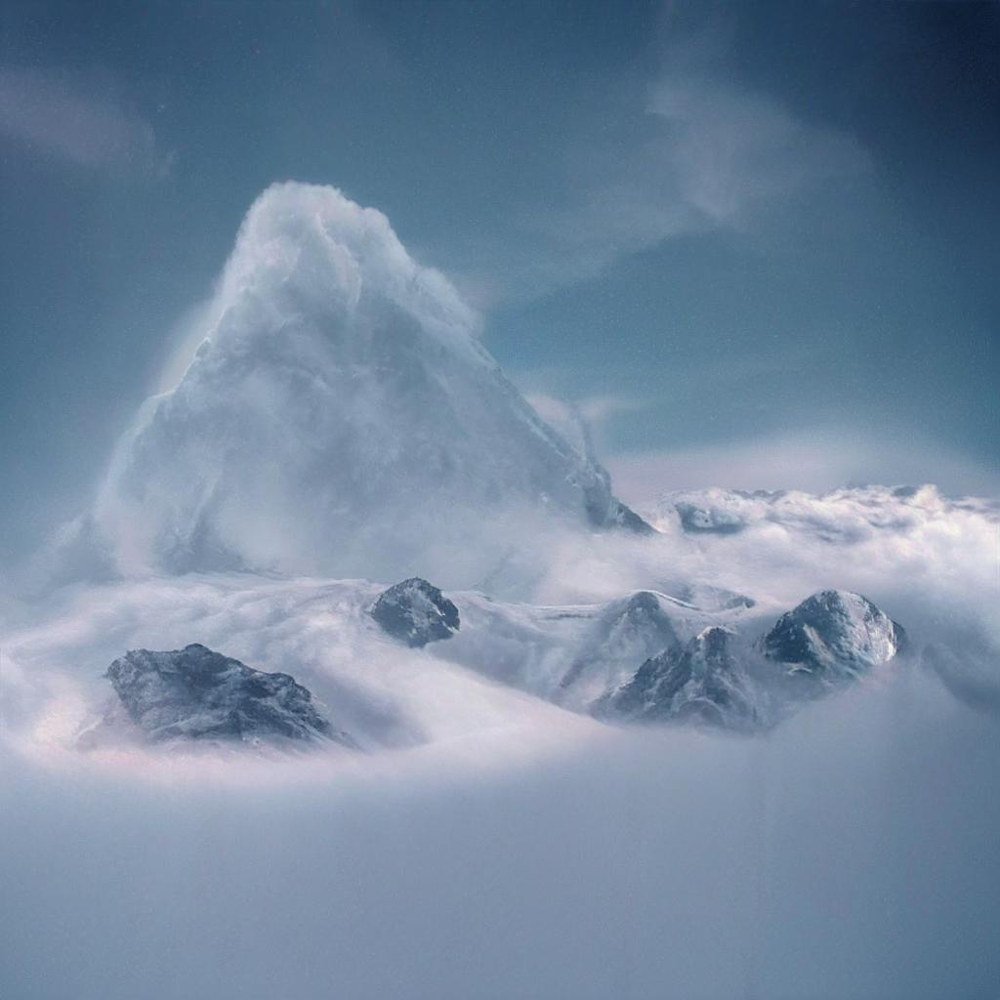
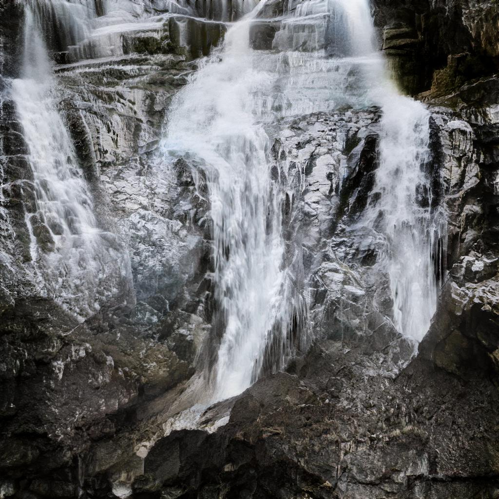

I use two AI painter to test the funtion of AI Painter: wombo and gaugan
I think the terrain of Guangxi is simple and geographic, so I try to model the shape of mountain in Guangxi
 
Although AI Writer do wonderful job, its work sometimes seem not very natural.
see more